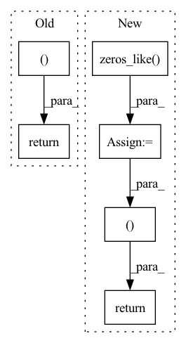

Pattern ID :384
Before Change
total_loss = global_ball_loss + local_ball_loss + event_loss + seg_loss
return pred_ball_position_global, pred_ball_position_local, pred_events, pred_seg, total_loss, None
After Change
org_ball_pos_xy)
// Create target for events spotting and ball position (local and global)
batch_size = pred_ball_global.size(0)
target_ball_global = torch.zeros_like( pred_ball_global)
target_ball_local = torch.zeros_like(pred_ball_global)
target_events = torch.zeros((batch_size, 2), device=self.device)
for idx in range(batch_size):
target_ball_global[idx] = create_target_ball(global_ball_pos_xy[idx], sigma=1., w=self.w, h=self.h,
thresh_mask=0.01, device=self.device)
target_ball_local[idx] = create_target_ball(local_ball_pos_xy[idx], sigma=1., w=self.w, h=self.h,
thresh_mask=0.01, device=self.device)
target_events[idx] = create_target_events(event_class[idx], device=self.device)
global_ball_loss = self.ball_loss_criterion(pred_ball_global, target_ball_global)
local_ball_loss = self.ball_loss_criterion(pred_ball_local, target_ball_local)
event_loss = self.event_loss_criterion(pred_events, target_events)
seg_loss = self.seg_loss_criterion(pred_seg, target_seg)
total_loss = global_ball_loss + local_ball_loss + event_loss + seg_loss
return pred_ball_global, pred_ball_local, pred_events, pred_seg, local_ball_pos_xy, total_loss, None
In pattern: SUPERPATTERN
Frequency: 3
Non-data size: 6
Instances Fragment ID: 1504176
Project Name: maudzung/ttnet-real-time-analysis-system-for-table-tennis-pytorch
Commit Name: 2d3bbff4dfe2976f33c01a4ccc914b01fd71cfe6
Time: 2020-06-01
Author: nguyenmaudung93.kstn@gmail.com
File Name: src/models/unbalanced_loss_model.py
M Class Name: Unbalance_Loss_Model
N Class Name: Unbalance_Loss_Model
M Method Name: forward(7)
N Method Name: forward(6)
M Parent Class: nn.Module
N Parent Class: nn.Module
M File Name: src/models/unbalanced_loss_model.py
N File Name: src/models/unbalanced_loss_model.py
M Start Line: 24
M End Line: 31
N Start Line: 23
N End Line: 46
Before Change
// Reverse order, so if we stack MAFs, correct things happen.
z = z.flip(dims=(1,)) if self.parity else z
log_det = torch.sum(s, dim=1)
return z, log_det
def inverse(self, z):
// we have to decode the x one at a time, sequentially
x = torch.zeros_like(z)After Change
def forward(self, z):
// we have to decode the x one at a time, sequentially
x = torch.zeros_like( z)
log_det = torch.zeros(z.size(0))
z = z.flip(dims=(1,)) if self.parity else z
for i in range(self.dim):
st = self.net(x.clone()) // clone to avoid in-place op errors if using IAF
s, t = st.split(self.dim, dim=1)
x[:, i] = (z[:, i] - t[:, i]) * torch.exp(-s[:, i])
log_det += -s[:, i]
return x, log_det
class IAF(MAF):
Reverses the flow of MAF, giving an Inverse Autoregressive Flow (IAF) Fragment ID: 1504177
Project Name: janosh/torch-mnf
Commit Name: 89ce9b3eb1de8e735e68602768c84ad28cbdd251
Time: 2020-08-23
Author: janosh.riebesell@gmail.com
File Name: torch_mnf/flows/maf.py
M Class Name: MAF
N Class Name: MAF
M Method Name: forward(2)
N Method Name: forward(2)
M Parent Class: nn.Module
N Parent Class: nn.Module
M File Name: torch_mnf/flows/maf.py
N File Name: torch_mnf/flows/maf.py
M Start Line: 33
M End Line: 39
N Start Line: 43
N End Line: 51
Before Change
x = F.tanh(self.fc2(x))
mu = F.tanh(self.pi(x))
sigma = F.softplus(self.sigma(x)) +1e-3
return mu,sigma
class Critic(nn.Module):
def __init__(self,state_dim,hidden_dim):
super(Critic, self).__init__()After Change
x = F.tanh(self.fc1(x))
x = F.tanh(self.fc2(x))
mu = self.pi(x)
logstd = torch.zeros_like( mu)
std = torch.exp(logstd)
return mu,std
class Critic(nn.Module):
def __init__(self,state_dim,hidden_dim):
super(Critic, self).__init__() Fragment ID: 1504174
Project Name: seolhokim/mujoco-pytorch
Commit Name: 093796ed092d87cea326ad7540c32da134809fe7
Time: 2021-03-23
Author: kilmya1@naver.com
File Name: network.py
M Class Name: Actor
N Class Name: Actor
M Method Name: forward(2)
N Method Name: forward(2)
M Parent Class: nn.Module
N Parent Class: nn.Module
M File Name: network.py
N File Name: network.py
M Start Line: 20
M End Line: 23
N Start Line: 20
N End Line: 24